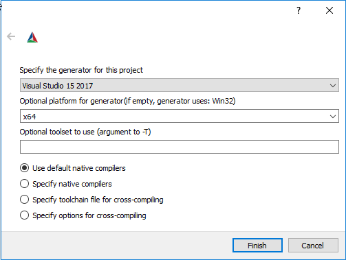

Libm2k
Libm2k is a C++ library for interfacing with the ADALM2000, split into more correlated components, interconnected by a context.
These m2k components represent the functionalities of ADALM2000:
AnalogIn - oscilloscope or voltmeter
AnalogOut - signal generator
Digital - logic analyzer or pattern generator
PowerSupply - constant voltage generator
DMM - digital multimeter
Libm2k can be used for encoding and decoding digital signals, communicating with a wide variety of chips, using some well known protocols, such as SPI, I²C or UART. Created based on no-OS communication headers, libm2k communication segment is build to interact with ADI’s chips in a generic way. Regardless of protocol, there are three common steps in any communication process: initialization, writing/reading, freeing the resources. A more detailed view of communicating with a peripheral is documented at Digital communication.
For an easier and faster control of m2k components, libm2k offers a command-line frontend, called m2kcli. This command line tool also includes the functionality of encoding and decoding digital signals. More information about m2kcli can be found on at Command line utility.
ADALM2000 drivers
Important
Make sure you install the ADALM2000 drivers for your operating system before using the board.
Linux
In order to access some USB functions without root privileges, it’s recommended to install the ADALM2000 udev rules. Simply download 53-adi-m2k-usb.rules and copy into the /etc/udev/rules.d/ folder
Windows
Instructions to install Windows drivers can be found at Windows Drivers.
Mac OS X
Instructions to install Mac OS X drivers can be found at Mac OS X Drivers.
How to install it?
Download
Download
Go to the latest release page and download the package that fits your system.
Installation
For Windows
Download the libm2k-Windows-setup.exe and run through all the required
steps.
Important
For libm2k versions starting with v0.6.0: The libm2k Windows installer does not include Python bindings. Check the Python bindings section for more details.
Warning
For libm2k versions older than v0.6.0: Make sure you only select the libm2k Python bindings that correspond to your installed Python version.
For Linux
Download the libiio-ubuntu.deb for your system
(from the nightly builds) and install it by running:
~$
sudo apt install -f ./libiio-package.deb
Download the libm2k-ubuntu.deb for your system and install it by running:
~$
sudo apt install -f ./libm2k-package.deb
For OSX
Download the libiio-darwin.pkg for your system
(from the nightly builds) and install it by running:
~$
sudo installer -pkg /path/to/package.pkg -target /
Download the libm2k-darwin.pkg for your system and install it by running
~$
sudo installer -pkg /path/to/package.pkg -target /
The m2kcli command line tool is also installed with the package. In order
to access it, the full path to it must be used
(/Library/Frameworks/libm2k.framework/Tools/m2kcli) or a symbolic link can
be created in the following way:
~$
ln -s /Library/Frameworks/libm2k.framework/Tools/m2kcli <path-to-accessible-location>/m2kcli
<path-to-accessible-location>: choose any location that is listed in the PATH
(example: /usr/local/bin or /usr/bin)
Note
When installing the Python bindings, you must configure the library path correctly. After installing Python bindings (either by using the .whl provided on the release page or via a pip), run the following command:
~$
install_name_tool -add_rpath /Library/Frameworks/ \
/Library/Frameworks/Python.framework/Versions/3.11/lib/python3.11/site-packages/_libm2k.cpython-311-darwin.so
Attention
Adjust the 3.11 and 311 references from the example to match your specific Python version.
Building and installing bindings
Python bindings
Option 1 - Download wheel packages: The easiest way to use the libm2k Python bindings is to install them using pip. Starting with version v0.6.0, libm2k releases provide an archive containing wheels for Windows, Linux, MacOS corresponding to Python versions 3.7, 3.8, 3.9 and 3.10.
~$
python3 -m pip install ./libm2k-0.6.0-cp310-cp310-win_amd64.whl
Option 2 - Use test.pypi.org: For every release starting with v0.6.0, all the Python wheels for libm2k will be uploaded to test.pypi.org. Check the files and install instructions here
Option 3 - Conda packages: If you are using Conda, libm2k packages are made available and updated at every major release. Check out more details here.
Option 4 - Build the bindings: The Python bindings are enabled by default if SWIG and a correct Python version are detected on your system. They can be specifically enabled or disabled by using the following:
~/libm2k/build$
cmake -DENABLE_PYTHON=ON/OFF ..
C# bindings
The C# bindings are disabled by default. They can be specifically enabled (requires SWIG and a correct C# compiler) or disabled by using the following:
~/libm2k/build$
cmake -DENABLE_CSHARP=ON/OFF ..
MATLAB bindings
MATLAB bindings come pre-packaged through installers for Linux and Windows. Further documentation is provided at Using with MATLAB.
LabVIEW bindings
LabVIEW bindings come pre-packaged through a .vip installer for Windows. Further documentation is provided at Using With LabVIEW.
Other features
Build m2k tools - m2kcli
Building m2kcli is disabled by default. It can be enabled by running the following
~/libm2k/build$
cmake -DENABLE_TOOLS=ON ..
Building with logging support
The logging system is disabled by default. It can be specifically enabled(requires glog library) or disabled by using the following:
~/libm2k/build$
cmake -DENABLE_LOG=ON/OFF ..
There is one more layer of controlling the logging. After building libm2k with logging support the user must enable the logging system from code, calling the method enableLogging(true). By default the logging system is disabled.
Building the examples
Building the examples is disabled by default. It can be enabled by running the following
~/libm2k/build$
cmake -DENABLE_EXAMPLES=ON ..
Building on Linux
Dependencies
Install git, cmake, swig, python:
~$
sudo apt install git cmake swig g++ python3-dev \
python3-setuptools libgoogle-glog-dev
Build and install libiio. Instructions can be found at Building libiio.
Install libm2k
Build and install libm2k:
~$
git clone https://github.com/analogdevicesinc/libm2k.git
~$
cd libm2k
~/libm2k$
mkdir build
~/libm2k$
cd build
~/libm2k/build$
cmake ../
~/libm2k/build$
make
~/libm2k/build$
sudo make install
If the Python bindings were enabled, they will be automatically installed in the site-packages folder specific for Python, once sudo make install is called.
Building on OSX
Dependencies
Install git, cmake, swig and python:
~$
brew install git cmake g++ swig python3 libusb
Download and install libiio.
Install libm2k
Build and install libm2k:
~$
git clone https://github.com/analogdevicesinc/libm2k.git
~$
cd libm2k
~/libm2k$
mkdir build
~/libm2k$
cd build
~/libm2k/build$
cmake ../
~/libm2k/build$
make
~/libm2k/build$
sudo make install
Install libm2k Python bindings
Make sure you installed libm2k first then run the following commands in order to install the Python bindings in your system.
~/libm2k$
cd build
~/libm2k/build$
python3 setup.py install_lib
This will install libm2k.py and _libm2k.so in the site-packages folder used by your python3 executable.
Building on Windows
Get the latest installer from here.
Dependencies
libiio
Download the libiio zip from ADI libiio repository (releases).
Choose a location and extract libiio.
CMake
Install CMake using an installer from the official page.
Swig
Download the SWIG zip from this page.
Choose a location and extract SWIG.
Python3
Download and install Python3 from the official page.
Set path to program files or
C:\Python37.
glog
Clone glog.
Use the CMake-gui. At startup, select your platform.
Enable BUILD_SHARED_LIBS and disable WITH_GFLAGS.
Set CMAKE_CONFIGURATION_TYPES to Release
Press ‘Configure’ button.
Press ‘Generate’ button.
Click ‘Open Project’ and build the solution.
Note: glog.dll should be placed next to your libm2k application or in your system
Install libm2k
Clone libm2k or download zip and extract it.
Use the CMake-gui and open
libm2k/CMakeLists.txt. At startup, select platform x64.Press the Configure button. Some of the parameters will be set to their correct value.
Browse the location where you extracted libiio and set
IIO_LIBRARIEStolibiio/MS64/libiio.libandIIO_INCLUDE_DIRSlibiio/include.(Only if logging is enabled) Browse the location where glog was built. Set
GLOG_LIBRARIEStoglog_build_dir/Release/glog.libandGLOG_INCLUDE_DIRSto yourglog_build_dir.Press the Configure button again.
Set the
PYTHON_EXECUTABLEto have the python install folder (C:/Python37/python.exe).Press the Configure button again.
Browse the location where you extracted SWIG and the SWIG_DIR to that location.
Press the Configure button again.
If no errors, click Generate button in CMake-gui
Click Open Project in CMake-gui - this will open Visual Studio.
{kind=link}
Build solution in visual studio
If you want to install the library in the system:
Open a Command Prompt in the libiio folder and copy all the .dll files in
C:\Windows\System32.Open a Command Prompt in the build folder and copy libm2k.dll in
C:\Windows\System32.
C# bindings
The C# bindings are built by default. In order to disable them, set
ENABLE_CSHARP=OFFin the CMake configuration.In order to use the C# bindings, you need to copy the following dlls in your build folder:
libm2k-sharp.dllandlibm2k-sharp-cxx-wrap.dll. These can be found inC:\Program Files\Common Files\libm2kif you installed libm2k using the system installer. Otherwise, you can download the latest archive from appveyor: Appveyor artifacts and get the dlls from there.Add
libm2k-sharp.dllas a reference in your project.Check the examples from the source code.
Documentation
API reference
An automatically generated documentation of the API can be found here.
calibration
Libm2k offers a software solution for calibrating the board. Please visit the dedicated page for more information.
m2kcli
Documentation can be found at Command line utility.